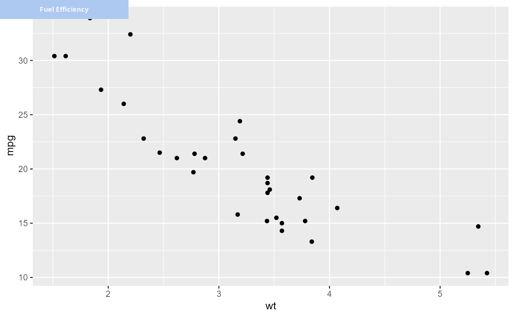

Add Label to Top of ggplot Object
plot_label.RdAdds a styled label with a colored background to the top of a plot using cowplot.
Useful for annotating subplots with country names, indicators, or categories.
Arguments
- plot
A ggplot object to be labeled.
- label
A string to display as the label.
- span
Integer (1, 2, or 3) controlling the width of the label box.
- h
Numeric height of the label box relative to the plot (default = 0.06).
- basesize
Numeric. Base font size in points. Default is 7.
- font
Character. Font family for all text elements. Default is "Gill Sans Nova".
Examples
library(ggplot2)
p <- ggplot(mtcars, aes(x = wt, y = mpg)) + geom_point()
plot_label(p, "Fuel Efficiency", span = 2)
